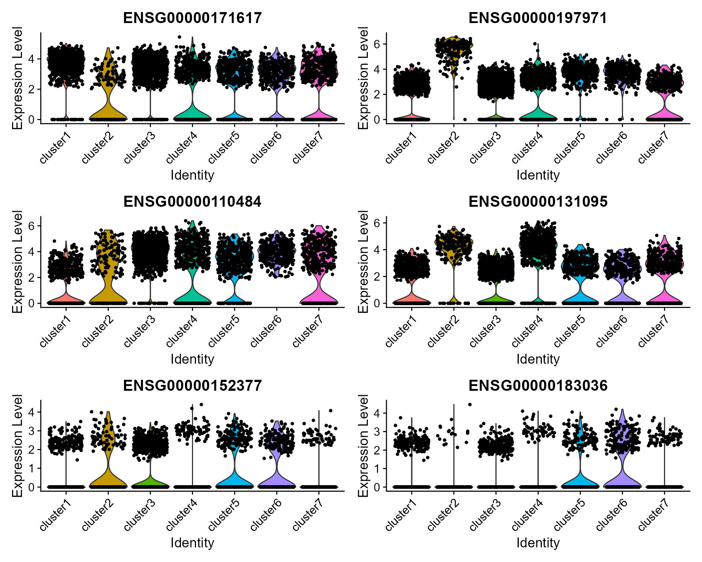
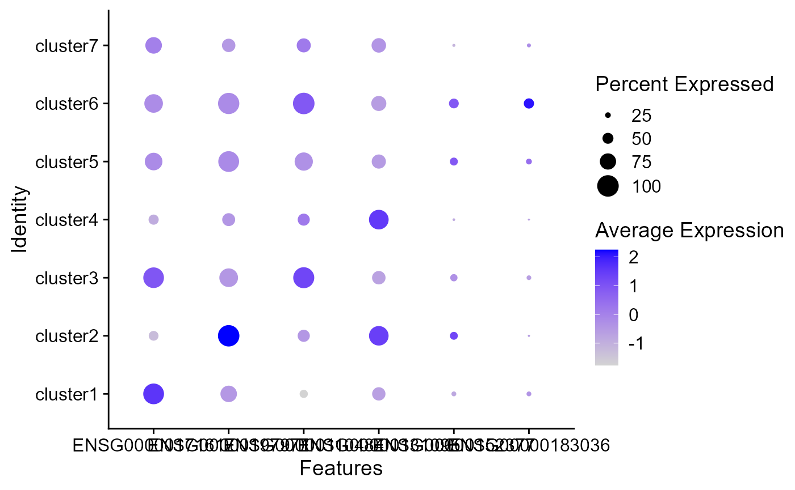

DR-SC: DLPFC Data Analysis
Wei Liu
2022-02-23
DR.SC.HCC1.RmdThe package can be loaded with the command:
library("DR.SC")
#> Loading required package: parallel
#> Loading required package: spatstat.geom
#> Warning: package 'spatstat.geom' was built under R version 4.0.5
#> Loading required package: spatstat.data
#> Warning: package 'spatstat.data' was built under R version 4.0.4
#> spatstat.geom 2.3-0
#> DR.SC : Joint dimension reduction and spatial clustering is conducted for
#> Single-cell RNA sequencing and spatial transcriptomics data, and more details can be referred to
#> Wei Liu, Xu Liao, Yi Yang, Huazhen Lin, Joe Yeong, Xiang Zhou, Xingjie Shi and Jin Liu. (2022) <doi:10.1101/2021.12.25.474153>. It is not only computationally efficient and scalable to the sample size increment, but also is capable of choosing the smoothness parameter and the number of clusters as well.Fit DR-SC using real data HCC1
load the data HCC1 in package DR.SC
data("dlpfc151510", package = 'DR.SC')Data preprocessing
library(Seurat)
#> Attaching SeuratObject
# standard log-normalization
dlpfc151510 <- NormalizeData(dlpfc151510, verbose = F)
# choose 500 highly variable features
seu <- FindVariableFeatures(dlpfc151510, nfeatures = 500, verbose = F)Fit DR-SC model using 1000 highly variable features
We set the argument variable.type=‘HVGs’ (default option) to use the highly variable genes.
### Given K
seu <- DR.SC(seu, K=7, platform = 'Visium', verbose=F)
#> Neighbors were identified for 4634 out of 4634 spots.
#> Fit DR-SC model...
#> Finish DR-SC model fittingVisualization
spatialPlotClusters(seu)
Show the tSNE plot based on the extracted features from DR-SC.
drscPlot(seu)
Show the UMAP plot based on the extracted features from DR-SC.
drscPlot(seu, visu.method = 'UMAP')
#> Warning: The default method for RunUMAP has changed from calling Python UMAP via reticulate to the R-native UWOT using the cosine metric
#> To use Python UMAP via reticulate, set umap.method to 'umap-learn' and metric to 'correlation'
#> This message will be shown once per session
#> Warning: Invalid name supplied, making object name syntactically valid. New
#> object name is RunUMAP.RNA.dr.sc; see ?make.names for more details on syntax
#> validityFit DR-SC model using 480 spatially variable features
# choose 480 spatially variable features
seus <- FindSVGs(seu, nfeatures = 480)
#> Find the spatially variables genes by SPARK-X...
#> ## ===== SPARK-X INPUT INFORMATION ====
#> ## number of total samples: 4634
#> ## number of total genes: 500
#> ## Running with single core, may take some time
#> ## Testing With Projection Kernel
#> ## Testing With Gaussian Kernel 1
#> ## Testing With Gaussian Kernel 2
#> ## Testing With Gaussian Kernel 3
#> ## Testing With Gaussian Kernel 4
#> ## Testing With Gaussian Kernel 5
#> ## Testing With Cosine Kernel 1
#> ## Testing With Cosine Kernel 2
#> ## Testing With Cosine Kernel 3
#> ## Testing With Cosine Kernel 4
#> ## Testing With Cosine Kernel 5We set the argument variable.type=‘SVGs’ (default option) to use the spatially variable genes.
### Given K
seus <- DR.SC(seus, K=7, platform = 'Visium', verbose=T)
#> Neighbors were identified for 4634 out of 4634 spots.
#> Fit DR-SC model...
#> -------------------Calculate inital values-------------
#> -------------------Finish computing inital values-------------
#> -------------------Starting ICM-EM algortihm-------------
#> iter = 2, loglik= -1228522.642564, dloglik=0.999428
#> iter = 3, loglik= -1222070.073574, dloglik=0.005252
#> iter = 4, loglik= -1220229.244307, dloglik=0.001506
#> iter = 5, loglik= -1219175.850470, dloglik=0.000863
#> iter = 6, loglik= -1218496.647196, dloglik=0.000557
#> iter = 7, loglik= -1217959.809427, dloglik=0.000441
#> iter = 8, loglik= -1217552.576343, dloglik=0.000334
#> iter = 9, loglik= -1217209.187820, dloglik=0.000282
#> iter = 10, loglik= -1216928.461434, dloglik=0.000231
#> iter = 11, loglik= -1216689.528325, dloglik=0.000196
#> iter = 12, loglik= -1216479.388650, dloglik=0.000173
#> iter = 13, loglik= -1216298.431104, dloglik=0.000149
#> iter = 14, loglik= -1216134.346168, dloglik=0.000135
#> iter = 15, loglik= -1215985.318437, dloglik=0.000123
#> iter = 16, loglik= -1215854.370103, dloglik=0.000108
#> iter = 17, loglik= -1215739.339004, dloglik=0.000095
#> iter = 18, loglik= -1215634.316515, dloglik=0.000086
#> iter = 19, loglik= -1215526.012082, dloglik=0.000089
#> iter = 20, loglik= -1215417.093982, dloglik=0.000090
#> iter = 21, loglik= -1215331.186944, dloglik=0.000071
#> iter = 22, loglik= -1215249.364654, dloglik=0.000067
#> iter = 23, loglik= -1215167.058207, dloglik=0.000068
#> iter = 24, loglik= -1215100.725954, dloglik=0.000055
#> iter = 25, loglik= -1215037.260550, dloglik=0.000052
#> -------------------Complete!-------------
#> elasped time is :62.25
#> Finish DR-SC model fittingVisualization
Show the spatial scatter plot for clusters
spatialPlotClusters(seus)
Show the tSNE plot based on the extracted features from DR-SC.
drscPlot(seus)Show the UMAP plot based on the extracted features from DR-SC.
drscPlot(seus, visu.method = 'UMAP')
#> Warning: Invalid name supplied, making object name syntactically valid. New
#> object name is RunUMAP.RNA.dr.sc; see ?make.names for more details on syntax
#> validity
Ridge plots
Find the marker genes in SVGs for each clusters
SVGs <- topSVGs(seus, ntop = 400)
dat <- FindAllMarkers(seus, features = SVGs)
#> Calculating cluster cluster1
#> Calculating cluster cluster2
#> Calculating cluster cluster3
#> Calculating cluster cluster4
#> Calculating cluster cluster5
#> Calculating cluster cluster6
#> Calculating cluster cluster7
head(dat)
#> p_val avg_log2FC pct.1 pct.2 p_val_adj cluster
#> ENSG00000110484 6.391976e-207 -2.8930351 0.370 0.806 3.195988e-204 cluster1
#> ENSG00000124935 1.026265e-126 -2.4420247 0.186 0.613 5.131327e-124 cluster1
#> ENSG00000171617 1.987680e-91 0.7556269 0.963 0.772 9.938401e-89 cluster1
#> ENSG00000115756 4.320795e-76 0.9032286 0.748 0.423 2.160398e-73 cluster1
#> ENSG00000185499 8.148238e-66 -1.6087997 0.189 0.489 4.074119e-63 cluster1
#> ENSG00000162545 6.860146e-62 0.4809817 0.987 0.900 3.430073e-59 cluster1
#> gene
#> ENSG00000110484 ENSG00000110484
#> ENSG00000124935 ENSG00000124935
#> ENSG00000171617 ENSG00000171617
#> ENSG00000115756 ENSG00000115756
#> ENSG00000185499 ENSG00000185499
#> ENSG00000162545 ENSG00000162545
library(dplyr, verbose=F)
#> Warning: package 'dplyr' was built under R version 4.0.5
#>
#> Attaching package: 'dplyr'
#> The following objects are masked from 'package:stats':
#>
#> filter, lag
#> The following objects are masked from 'package:base':
#>
#> intersect, setdiff, setequal, union
top2 <- dat %>%
group_by(cluster) %>%
top_n(n = 2, wt = avg_log2FC)
top2
#> Registered S3 method overwritten by 'cli':
#> method from
#> print.boxx spatstat.geom
#> # A tibble: 14 x 7
#> # Groups: cluster [7]
#> p_val avg_log2FC pct.1 pct.2 p_val_adj cluster gene
#> <dbl> <dbl> <dbl> <dbl> <dbl> <fct> <chr>
#> 1 1.99e- 91 0.756 0.963 0.772 9.94e- 89 cluster1 ENSG00000171617
#> 2 4.32e- 76 0.903 0.748 0.423 2.16e- 73 cluster1 ENSG00000115756
#> 3 1.49e-126 3.69 0.995 0.79 7.47e-124 cluster2 ENSG00000197971
#> 4 1.29e-114 3.70 0.963 0.639 6.44e-112 cluster2 ENSG00000123560
#> 5 8.04e-177 0.962 0.975 0.613 4.02e-174 cluster3 ENSG00000110484
#> 6 1.58e-145 0.977 0.848 0.393 7.92e-143 cluster3 ENSG00000124935
#> 7 1.65e-254 2.45 0.91 0.65 8.26e-252 cluster4 ENSG00000131095
#> 8 4.27e- 66 1.88 0.472 0.261 2.14e- 63 cluster4 ENSG00000171885
#> 9 6.37e- 10 0.621 0.359 0.25 3.19e- 7 cluster5 ENSG00000152377
#> 10 5.79e- 8 0.631 0.169 0.093 2.90e- 5 cluster5 ENSG00000158258
#> 11 4.88e- 43 1.32 0.466 0.179 2.44e- 40 cluster6 ENSG00000183036
#> 12 4.89e- 40 1.03 0.537 0.23 2.44e- 37 cluster6 ENSG00000155886
#> 13 9.58e- 36 1.15 0.609 0.42 4.79e- 33 cluster7 ENSG00000145824
#> 14 1.47e- 6 0.772 0.257 0.181 7.34e- 4 cluster7 ENSG00000173432Visualize single cell expression distributions in each cluster from Seruat.
genes <- top2$gene[seq(1, 12, by=2)]
RidgePlot(seus, features = genes, ncol = 2)
#> Picking joint bandwidth of 0.263
#> Picking joint bandwidth of 0.236
#> Picking joint bandwidth of 0.378
#> Picking joint bandwidth of 0.31
#> Picking joint bandwidth of 0.188
#> Picking joint bandwidth of 0.0977 ### Violin plot
### Violin plot
Visualize single cell expression distributions in each cluster
VlnPlot(seus, features = genes, ncol=2)
Feature plot
We extract tSNE based on the features from DR-SC and then visualize feature expression in the low-dimensional space
seus <- RunTSNE(seus, reduction="dr-sc", reduction.key='drsc_tSNE_')
#> Warning: Keys should be one or more alphanumeric characters followed by an
#> underscore, setting key from drsc_tSNE_ to drsctSNE_
#> Warning: All keys should be one or more alphanumeric characters followed by an
#> underscore '_', setting key to drsctSNE_
FeaturePlot(seus, features = genes, reduction = 'tsne' ,ncol=2)
Dot plots
The size of the dot corresponds to the percentage of cells expressing the feature in each cluster. The color represents the average expression level
DotPlot(seus, features = genes)
Heatmap plot
Single cell heatmap of feature expression
top20 <- dat %>%
group_by(cluster) %>%
top_n(n = 20, wt = avg_log2FC)
genes <- top20$gene
# standard scaling (no regression)
seus <- ScaleData(seus)
#> Centering and scaling data matrix
DoHeatmap(subset(seus, downsample = 500), features = genes, size = 5)
#> Warning: Invalid name supplied, making object name syntactically valid. New
#> object name is dr.sc; see ?make.names for more details on syntax validity
#> Warning: Cannot add objects with duplicate keys (offending key: DRSC_), setting
#> key to 'dr.sc_'Fit DR-SC model using 480 spatially variable features and using MBIC to determine clusters
# choose 2000 spatially variable features
seus <- FindSVGs(seu, nfeatures = 480, verbose = F)We set the argument variable.type=‘SVGs’ (default option) to use the spatially variable genes.
### Given K
seus <- DR.SC(seus, K=3:9, platform = 'Visium', verbose=F)
#> Neighbors were identified for 4634 out of 4634 spots.
#> Fit DR-SC model...
#> Starting parallel computing intial values...
#> Finish DR-SC model fittingPlot the MBIC curve
seus <- selectModel(seus, pen.const = 0.8)
mbicPlot(seus)
Show the spatial scatter plot for clusters
spatialPlotClusters(seus)
Show the tSNE plot based on the extracted features from DR-SC.
drscPlot(seus, dims=1:10)Session information
sessionInfo()
#> R version 4.0.3 (2020-10-10)
#> Platform: x86_64-w64-mingw32/x64 (64-bit)
#> Running under: Windows 10 x64 (build 22000)
#>
#> Matrix products: default
#>
#> locale:
#> [1] LC_COLLATE=Chinese (Simplified)_China.936
#> [2] LC_CTYPE=Chinese (Simplified)_China.936
#> [3] LC_MONETARY=Chinese (Simplified)_China.936
#> [4] LC_NUMERIC=C
#> [5] LC_TIME=Chinese (Simplified)_China.936
#>
#> attached base packages:
#> [1] parallel stats graphics grDevices utils datasets methods
#> [8] base
#>
#> other attached packages:
#> [1] dplyr_1.0.7 SeuratObject_4.0.2 Seurat_4.0.5
#> [4] DR.SC_2.6 spatstat.geom_2.3-0 spatstat.data_2.1-0
#>
#> loaded via a namespace (and not attached):
#> [1] Rtsne_0.15 colorspace_2.0-2 deldir_1.0-6
#> [4] ellipsis_0.3.2 ggridges_0.5.3 mclust_5.4.8
#> [7] rprojroot_2.0.2 fs_1.5.2 rstudioapi_0.13
#> [10] farver_2.1.0 leiden_0.3.9 GiRaF_1.0.1
#> [13] listenv_0.8.0 ggrepel_0.9.1 RSpectra_0.16-0
#> [16] fansi_0.5.0 codetools_0.2-18 splines_4.0.3
#> [19] cachem_1.0.6 knitr_1.37 polyclip_1.10-0
#> [22] jsonlite_1.7.2 ica_1.0-2 cluster_2.1.1
#> [25] png_0.1-7 uwot_0.1.10 spatstat.sparse_2.0-0
#> [28] sctransform_0.3.2 shiny_1.7.1 compiler_4.0.3
#> [31] httr_1.4.2 assertthat_0.2.1 Matrix_1.2-18
#> [34] fastmap_1.1.0 lazyeval_0.2.2 cli_3.0.1
#> [37] limma_3.46.0 later_1.3.0 htmltools_0.5.2
#> [40] tools_4.0.3 igraph_1.2.6 gtable_0.3.0
#> [43] glue_1.4.2 reshape2_1.4.4 RANN_2.6.1
#> [46] Rcpp_1.0.7 scattermore_0.7 jquerylib_0.1.4
#> [49] pkgdown_1.6.1 vctrs_0.3.8 nlme_3.1-152
#> [52] lmtest_0.9-38 xfun_0.29 stringr_1.4.0
#> [55] globals_0.14.0 mime_0.12 miniUI_0.1.1.1
#> [58] CompQuadForm_1.4.3 lifecycle_1.0.1 irlba_2.3.3
#> [61] goftest_1.2-2 future_1.23.0 MASS_7.3-53.1
#> [64] zoo_1.8-9 scales_1.1.1 spatstat.core_2.0-0
#> [67] ragg_1.1.3 promises_1.2.0.1 spatstat.utils_2.2-0
#> [70] RColorBrewer_1.1-2 yaml_2.2.2 gridExtra_2.3
#> [73] memoise_2.0.0 reticulate_1.18 pbapply_1.5-0
#> [76] ggplot2_3.3.5 sass_0.4.0 rpart_4.1-15
#> [79] stringi_1.7.5 highr_0.9 S4Vectors_0.28.1
#> [82] desc_1.3.0 BiocGenerics_0.36.1 rlang_0.4.11
#> [85] pkgconfig_2.0.3 systemfonts_1.0.3 matrixStats_0.58.0
#> [88] evaluate_0.14 lattice_0.20-41 tensor_1.5
#> [91] ROCR_1.0-11 purrr_0.3.4 labeling_0.4.2
#> [94] patchwork_1.1.1 htmlwidgets_1.5.4 cowplot_1.1.1
#> [97] tidyselect_1.1.1 parallelly_1.30.0 RcppAnnoy_0.0.18
#> [100] plyr_1.8.6 magrittr_2.0.1 R6_2.5.1
#> [103] generics_0.1.1 DBI_1.1.2 withr_2.4.3
#> [106] mgcv_1.8-34 pillar_1.6.5 fitdistrplus_1.1-6
#> [109] abind_1.4-5 survival_3.2-7 tibble_3.1.5
#> [112] future.apply_1.8.1 crayon_1.4.2 KernSmooth_2.23-18
#> [115] utf8_1.2.2 plotly_4.10.0 rmarkdown_2.11
#> [118] grid_4.0.3 data.table_1.14.2 digest_0.6.28
#> [121] xtable_1.8-4 tidyr_1.1.4 httpuv_1.5.5
#> [124] textshaping_0.3.5 stats4_4.0.3 munsell_0.5.0
#> [127] viridisLite_0.4.0 bslib_0.3.1